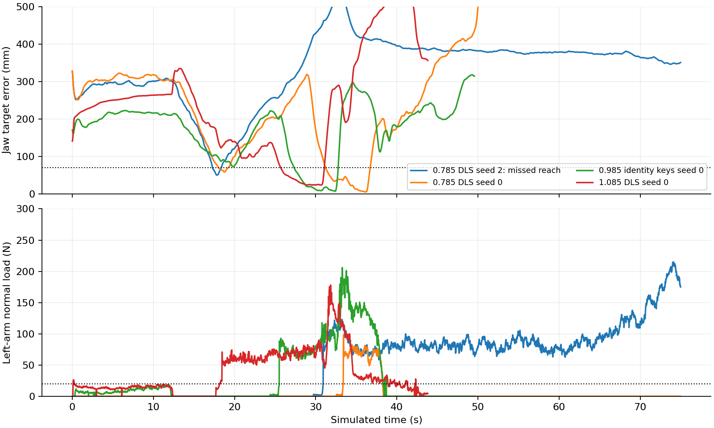
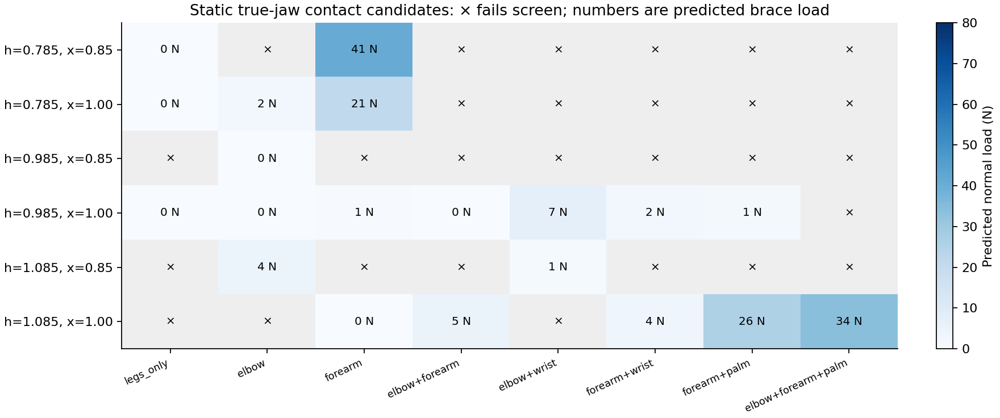
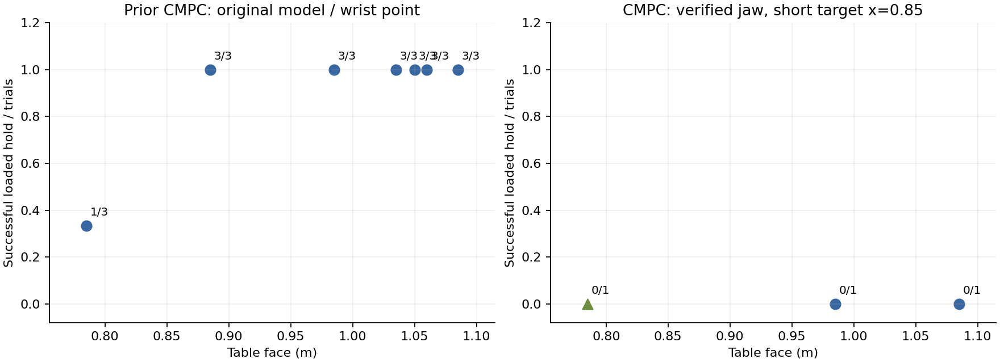
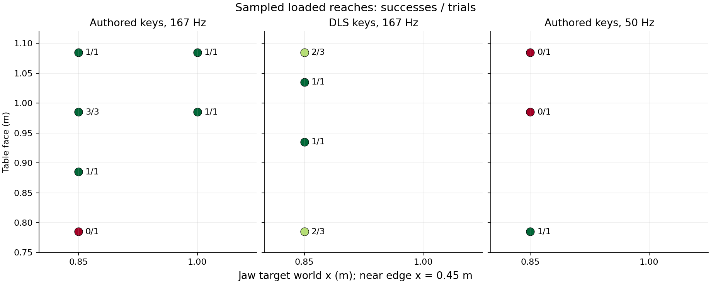

Local simulation study · 2026-09-08 · no hardware, DDS, uploads or pushes
Table-height generalization with synchronized planning models
A fixed, meaningful lean+reach target was demonstrated across the sampled 0.785–1.085 m table-height range. The main fix was a bench defect: the plant moved to the requested table height while the planner kept its nominal table and brace references. Synchronizing those models enabled reaches that the previous height study treated as failures.
The repeated target is the actual jaw point at (0.85, −0.04, face + 0.15) m, 0.40 m inside the near edge. At each of 0.785, 0.985 and 1.085 m, 2/3 trials held within 30 mm for at least two continuous seconds while carrying ≥20 N left-arm normal load and avoiding a fall. At the predefined 70 mm tolerance the counts are 2/3, 3/3 and 2/3. The low/high cases use DLS-retargeted brace keys; nominal uses the identical unmodified references because the height shift is zero. All use the same target offsets, home reset, weights and 167 Hz simulated planning rate.
Recovery and repeatability remain limited. Low-table recovery completed 0/3 times: two reaches succeeded, then release stalled; the other run stayed braced but missed by at least 346 mm. Nominal recovery completed 3/3 times. High recovery completed 2/3 times, with one approach fall. Additional single-trial screens at 0.885 m (authored keys), 0.935 m and 1.035 m (DLS) completed their sequences. The 0.935 m screen passed the 70 mm loaded-hold criterion but achieved only 1.86 s within 30 mm. Three starts provide limited repeatability evidence, not a population success rate or a continuous workspace boundary.
The explicit high-table base-height command was implemented and verified in both models. Gain 0.5 plus DLS completed one original-far-target trial; synchronization alone also completed that far target. This does not establish a separate benefit from the base-height gain. The synchronized +60 mm low-stance screen remained upright but missed the short target by at least 341 mm, so that offset grid was stopped. A separate low-table 50 Hz screen succeeded once; nominal/high 50 Hz screens fell. Rates and reference variants are kept separate.
The Crocoddyl comparison supports a careful motivator, not an optimizer ranking. A full-state audit of its existing original-model study supports 3/3 loaded holds at each sampled height from 0.885 to 1.085 m, and 1/3 at 0.785 m. Five new correctly mapped current-model transfer probes all failed, including forearm-only support, a farther target, and a shared standing start. Four earlier wrist-point calibration failures are retained separately. Physical model, endpoint, approach timing and controller details explain why the old and new studies cannot be pooled. This report contains 25 new MJPC episodes and nine new CMPC episodes, including those four calibration runs. No hardware, DDS, uploads or pushes were used.
Fixed short target: measured repeats
Jaw target is (0.85, −0.04, face + 0.15) m at every height, 0.40 m beyond the near edge. Each loaded-reach count requires at least two continuous seconds with ≥20 N left-arm normal load and no fall; columns separate 70 mm and 30 mm reach tolerance. Authored and DLS-retargeted brace keys are separated. Same reset, no stance or explicit base-height gain. At nominal height DLS makes no edit. Successful-run ranges below exclude failed trials, which remain in the denominator and raw table. Error, force and tilt summaries use samples meeting the joint condition.
| Face m | Plan Hz | Brace keys | Loaded reach ≤70 mm | Loaded reach ≤30 mm | Ladder | Dwell s | Loaded error p95 mm | Loaded force p05 N | Loaded tilt median ° |
|---|
| 0.785 | 166.7 | authored | 0/1 | 0/1 | 0/1 | — | — | — | — |
| 0.785 | 166.7 | DLS | 2/3 | 2/3 | 0/3 | 2.82–5.18 | 45.1–55.1 | 63.0–72.4 | 50.0–54.0 |
| 0.785 | 50.0 | authored | 1/1 | 0/1 | 0/1 | 4.98–4.98 | 65.5–65.5 | 138.0–138.0 | 56.6–56.6 |
| 0.885 | 166.7 | authored | 1/1 | 1/1 | 1/1 | 4.98–4.98 | 50.5–50.5 | 56.9–56.9 | 40.4–40.4 |
| 0.935 | 166.7 | DLS | 1/1 | 0/1 | 1/1 | 2.46–2.46 | 39.7–39.7 | 65.3–65.3 | 31.7–31.7 |
| 0.985 | 166.7 | authored | 3/3 | 2/3 | 3/3 | 2.54–4.98 | 59.4–62.4 | 62.1–95.2 | 25.1–27.4 |
| 0.985 | 50.0 | authored | 0/1 | 0/1 | 0/1 | — | — | — | — |
| 1.035 | 166.7 | DLS | 1/1 | 1/1 | 1/1 | 4.98–4.98 | 49.9–49.9 | 69.7–69.7 | 21.5–21.5 |
| 1.085 | 166.7 | authored | 1/1 | 1/1 | 1/1 | 4.98–4.98 | 48.1–48.1 | 61.8–61.8 | 11.1–11.1 |
| 1.085 | 166.7 | DLS | 2/3 | 2/3 | 2/3 | 4.98–4.98 | 51.4–59.4 | 59.9–64.3 | 13.3–13.8 |
| 1.085 | 50.0 | authored | 0/1 | 0/1 | 0/1 | — | — | — | — |
Model-copy defect in the height bench
Agent::Initialize copies the model before the first task transition. The task then moves the table and retargets brace keyframes on the plant only. Sampling rollouts use the unchanged agent model. The runtime log at a 1.085 m face reads:
[bench-model-before] plant_face=1.0850 planner_face=0.9850
[bench-model-after] plant_face=1.0850 planner_face=1.0850
The fix copies the post-transition model into the existing planner model before its first optimization. The fixed-height bench has no later environment changes. --sync_planning_model 0 reproduces the historical mismatch; synchronization defaults to 1. Controller defaults remain unchanged. Prior off-height failures mix controller behavior with a wrong planning environment and cannot identify an optimizer-only height limit. The failed initial gain=1 trial also never delivered its modified keyframes to planning. The prior six shipped high-table seeds had four zero peak forearm loads and two brief peaks of 20.9 and 31.8 N; those historical peaks are not equivalent to this report’s broader left-arm normal-load statistic.
The successful MJPC pilots load the left forearm body most strongly; the high DLS pilot also loads the left wrist body. The checked successful intervals have no logged reaching-arm or other unattributed table load. Body-level resultant medians and the reaching-arm/other peak are retained in the report JSON, separately from the normal-force success statistic. This supports revisiting contact modes rather than equating an authored posture or a declared elbow–forearm schedule with the observed load path.
The explicit brace_base_z_gain experiment sets the three brace base-height references to authored z + gain × (face − 0.985), optionally after DLS. It defaults to zero. This deliberate reference edit is not an IK certificate: the DLS residual is measured before overriding base z.
Dynamic scoring and comparison conditions
A joint successful interval requires jaw error ≤70 mm, left-arm normal load ≥20 N, pelvis >0.8 m and torso/pelvis table load <10 N for at least two continuous seconds. Whole-run logged pelvis must remain at or above 0.65 m, and MJPC must not trigger its fall detector. MJPC scores the phase-2 reach rung. The 30 mm dwell is reported separately. MJPC may release after reaching; ladder completion is separate. Crocoddyl runs 25 s and must satisfy the joint criterion in at least 95% of the final five seconds, including a two-second continuous interval. The duration and recovery requirements differ and are stated beside the counts.
Dwell is evaluated on sampled logs: MJPC 50 Hz, new CMPC 100 Hz, prior CMPC audit 20 Hz. New force traces use actual simulated contacts, exclude floor and object, sum every left-arm body including unnamed wrist housings, and keep torso load separate. Cached contact/kinematic fields can lag logged qpos by one 2 ms step. MJPC reach errors are recomputed from saved qpos using the exact jaw offset (0.2254, −0.0118, −0.1062) m. Its early experimental jaw columns omitted y/z; the uniform qpos analysis fixes this for every run.
CMPC trials labeled with verified jaw mapping use the current assembled MJPC model, MuJoCo 3.2.3, the same full jaw offset, table-frame target, home reset (except the explicit shared stand_up check) and 0.003 xorshift qpos/qvel perturbation. Recorded nominal/high initial states were checked against the bench formula with zero numerical difference; initial-state audit. The old Crocoddyl study used MuJoCo 3.10, a different collision/joint-limit model, wrist offset (0.13,0,0), target (1.06,−0.2348,face+0.1132), stand reset, and Gaussian perturbations with an unperturbed seed 0. Its results are shown separately.
MJPC uses six sampling threads and a 1 s prediction horizon with 10 ms prediction steps. Its plant step is 2 ms, so spp=3 is 167 Hz and spp=10 is 50 Hz. Crocoddyl uses 35 nodes at 20 ms and one BoxFDDP iteration per 50 Hz period; the installed binary is single-threaded despite the requested six threads. MJPC holds its initial standing rung for 12 s and uses an 18 s brace-reference ramp; CMPC uses a 2.4 s approach followed by its explicit contact phase. Costs, approach timing, contact schedule and control delivery differ. These compare complete controllers under common physical conditions. Representative 167 Hz episodes consumed about 7–8 wall-clock seconds per simulated second under the stated caps. CMPC timings include fallen states. Neither optimizer-only causality nor real-time performance is established.
MJPC runs
All completed new runs, including failures. To reproduce a historical unsynchronized row with the current binary, restore its linked strategy snapshot and append --sync_planning_model 0 to the saved command. The first four exploratory runs used the historical model copy. Later logs record synchronized geometry. One seed is a screening result, not repeatability; rates and target variants are never pooled. The seed changes the reset state, while sampling noise is independently randomized by Abseil BitGen. Three successful trials are limited evidence, not an estimated population reliability.

The hand leaves the target during the return sequence; the rise in error after successful reach is expected. Dashed lines mark the 70 mm and 20 N thresholds.
Crocoddyl runs and contact modes

The corrected six-cell screen selected candidate contact modes. A static admissibility label does not establish a stable approach or hold; the dynamic trials below test those claims.

Left: independently audited prior trajectories at x=1.06, excluding the separate x=0.9047 failure. Right: new common-model home-start x=0.85 trials only; the separate x=1.15 test is excluded; circles are elbow–forearm, squares elbow–wrist, triangles forearm. Final-frame-only summaries are not used.
The prior high-table brace runs have final-five-second reach-error p95 values of 2.9–4.7 mm and left-arm load p05 values of 111.8–116.9 N. At 0.785 m only one of three brace runs survives. The surviving prior high-table “stand” trial also takes incidental left-arm support (27.9 N load p05), so it is not a clean unbraced control.
An initial calibration screen tested a wrist-frame point over six height/target cells and the existing eight-mode ladder. At x=1.0, elbow–forearm was assigned only 0.2 N at nominal height and 1.4 N at high height; elbow–wrist was assigned 48–57 N across low/nominal/high. Mode names alone do not establish actual load. That screen used a different physical endpoint from the MJPC jaw and must not be used to bound its workspace. A corrected jaw-frame screen is linked below; all such pinned-foot screens are candidate generators, not dynamic workspace bounds.
The current model rotates the right gripper by 90° about the wrist x-axis. The first four CMPC calibration trials applied the gripper-local offset directly in the wrist frame. They remain in the table, with their own measured endpoint, and are excluded from matched jaw comparisons. The opt-in bridge fix composes the welded gripper transform before creating the Pinocchio frame. At the reference pose, independent parity checks then agree to approximately 1 micrometre at the jaw, 1.5×10⁻⁵ N m in gravity and 8.3×10⁻⁷ kg m² in the actuated mass matrix.
Sampled reachable workspace

Targets use y=−0.04 m and z=face+0.15 m unless a run states otherwise. This is a sampled vertical/depth section; no hemispherical shape or unsampled boundary is inferred. Panels separate rates and reference choices. The nominal far-target baseline has identical planning geometry and is included. Far-target gates use two-second sustain; short-target gates use five seconds, with the same independent two-second loaded-reach score. No boundary is interpolated.
Replays
These render saved simulated states. They do not rerun physics; contact overlays come from the recorded episode or the stated full-state prior audit.
Low table, DLS, 167 Hz, seed 0: loaded reach; recovery stalls. Orange sphere: commanded reaching point. The overlay uses measured trajectory metrics.Low table, DLS, 167 Hz, seed 2: remains braced but misses the hand target. Orange sphere: commanded reaching point. The overlay uses measured trajectory metrics.short_h0985_s0 Orange sphere: commanded reaching point. The overlay uses measured trajectory metrics.High table, DLS, 167 Hz, seed 0: loaded reach and completed recovery. Orange sphere: commanded reaching point. The overlay uses measured trajectory metrics.Prior CMPC high-table hold: original model, MuJoCo 3.10, wrist point; independently audited. Orange sphere: commanded reaching point. The overlay uses measured trajectory metrics.Verified-jaw CMPC, nominal x=0.85, home: brief contact followed by a fall, no successful hold. Orange sphere: commanded reaching point. The overlay uses measured trajectory metrics.short_h1085_s0 Orange sphere: commanded reaching point. The overlay uses measured trajectory metrics.sync_h1085_s0 Orange sphere: commanded reaching point. The overlay uses measured trajectory metrics.Low table, authored keys, 50 Hz, seed 0: loaded reach; recovery incomplete at 75 s. Orange sphere: commanded reaching point. The overlay uses measured trajectory metrics.Endpoint calibration failure; wrist-frame point, excluded from matched jaw comparisons. Orange sphere: commanded reaching point. The overlay uses measured trajectory metrics.
Implementation
Local source commits: MJPC 4398d8a8; Crocoddyl hooks 51d604e and b1040fd.
MJPC patch: fixed-height planner-model synchronization, measured jaw/normal-load logging, default-off base-height gain, and selectable validated starting keyframe. Crocoddyl patch: opt-in endpoint/welded-frame mapping, table-leg matching, and explicit episode initial states. Existing controller defaults are preserved outside the corrected bench synchronization.
The local build passed, Python study scripts passed syntax checks, and the simulations exercise the modified paths. Recorded initial-state parity and byte-identical assembled model after rebuilding support the comparison. This demonstrates finite-duration simulated behavior; unsampled targets, disturbances, repeated task cycles and hardware remain outside the measured result.
Reproduction and handoff
Everything is local in /home/humanoid/Programs/mujoco_mpc_codex_tableheight_20260908, with the Crocoddyl hooks in /home/humanoid/Programs/crocoddyl_mpc_codex_tableheight_20260908. The original checkouts were not reset or switched. Existing untracked video.mp4 and Crocoddyl bvs_plots.py edits were preserved.
Runs are serial. MJPC is capped at 700% CPU and 11 GiB; CMPC at 600% CPU and 8 GiB. The first CMPC run initially hit a 4 GiB cap (paging, no OOM); its cap was raised to 8 GiB during the run. No simulated state was reset by that resource change. Raw trajectories, command snapshots and failed attempts remain on disk. No result was uploaded or pushed.